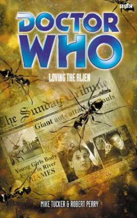

|
Loving the Alien
|
BASIC PLOT DOCTOR COMPANIONS MATERIALISATION CIRCUIT Pg 227 The TARDIS travels to Kennington (offscreen) and then returns to the boiler room on automatic relay. PREPARATORY READING Matrix and Storm Harvest aren't essential, but it's probably best to read the full Tucker/Perry story arc this book concludes. CONTINUITY REFERENCES Front cover: The image of Ace's body is actually from the BBV video More Than a Messiah (but see Continuity Cock-ups). Pg 6"The experimental Waverider, the plane that the British Rocket Group hope will put a man into orbit" Rachel Jensen was a member of the British Rocket Group in Remembrance of the Daleks and we also see them in The Devil Goblins from Neptune. Pg 20 "Ace floated in the warm waters of the TARDIS swimming pool, or the bathroom as the Doctor insisted on calling it." Seen in Invasion of Time. It had been jettisoned in Paradise Towers, but appears in various New Adventures, so the Doctor clearly designed a new one. Pg 21 "After Blini-Gaar, after everything they had been through with Vogul Lukos and Channel 400" Prime Time. "And then they had landed at Heritage." Heritage. Pgs 21-22 "Poor trusting Mel. A do-gooder always seeing the best in people. So trusting that she had left the Doctor and headed out into the void with Sabalom Glitz without a moment's hesitation." Dragonfire. Pg 22 "All except a battered menu from the Shangri La Holiday Camp that Ace kept pinned to her noticeboard as a reminder. A reminder that she was not the first." Delta and the Bannermen. "After Heritage the Doctor had been lower than Ace had ever known him." Heritage. "The Doctor keeping her in stitches as he whistled like a Clanger." Seen in The Sea Devils. Pg 23 "She had looked her killer in the eye as he had ended her life." Paraphrase of the Doctor's quote from The Happiness Patrol. Pg 24 "He had nearly given it all up after that. Nearly taken her back to Iceworld" Dragonfire. "Mel dead. And Ace was next..." Heritage, Prime Time. Pg 33 "Come along, Miss Gale." Ace's surname has been Gale in Illegal Alien, Matrix and Prime Time. It was McShane in the New Adventures, but this discrepancy is solved in this book (page 267). Pg 39 "I thought you had a morbid fear of bus station" Ghost Light. "The last time she had been in Central London was during the Blitz." Illegal Alien Pg 43 "She smiled as she unclipped the red star. The badge that Sorin had given her." The Curse of Fenric. Pg 50 "The Doctor was shaking his hand vigorously, looking no different from when McBride had met him, nineteen years ago." Illegal Alien. Pg 57 "Yeah, well that business with the Cybermen kinda took its toll, on both of us, and..." Illegal Alien. Pg 63 "'I don't give a damn about any giant ant,' said Mullen slowly, his anger rising, 'any more than I give a damn about Cybermen down the sewers or reds under the bloody bed!'" Illegal Alien. Pg 64 "When your obsession with the damned Cybermen started." Illegal Alien. Pg 68 "Remember what he was up against before - Lazonby, the nut from British intelligence... that sneaky old creep George limb, not to mention our big silver buddies. And the Nazis - you remember the news from Jersey... The Doc sorted all that out." Illegal Alien. Pg 71 "He shuddered at the memory of the last time he'd walked down Whitechapel Road. The year had been 1888, and the Doctor anything but himself - he'd even tried to kill Ace." Matrix. Pg 75 Reference to Lethbridge-Stewart. Pg 76 "And then an odd sort of seal." Possibly the Seal of Rassilon, but more likely the seventh Doctor's seal, as seen in Remembrance of the Daleks. Pg 95 "Something came out of the tunnels. Giant men in silver armour - hideously strong." Illegal Alien. Pg 111 "I used to have something similar" The sonic screwdriver. Presumably the version the Doctor had in The Nightmare Fair was lost or destroyed. He gets one again by The Pit. Pg 114 "They'd turned up in his office one day during the Blitz, claiming aliens had landed." Illegal Alien. Pg 133 "Single-handedly he had deceived the Doctor, British Intelligence - even the Third Reich." Illegal Alien. Pg 136 "Of all the people she'd met on her travels with the Doctor, all the enemies they'd fought, she hated George Limb more than any of them." Illegal Alien. Pg 164 "I've destroyed planets" Remembrance of the Daleks. Pg 188 "Well, I must admit I thought I was going to die the first time, when I made my escape from Jersey." Illegal Alien. Pg 194 "He was recalling their first meeting with George Limb, at his house in Belsize park, back in '41." Illegal Alien. Pg 216 "He remembered standing on a world burnt up by nuclear holocaust, the forests petrified, the soil turned to ash, the people mutated." The Daleks. Pg 229 "He had been helpless to save the people of Mondas..." Spare Parts. Pgs 245-246 "An advance unit by the Thames has had to ward off an attack by lizard people emerging from an energy tear near Battersea." Alternate universe Silurians, presumably. Pg 252 "Lieberman is a genius. A European Jew. Perhaps in your world he never made it through the war. Perhaps he merely wandered a different path..." Lieberman, the wandering Jew, appeared in Matrix. Pg 256/257 "YOU BELONG TO US> [...] YOU WILL BE LIKE US>" Tomb of the Cybermen. Pg 267 "To all intents and purposes she is the same Ace she was before, barring one or two small details. She doesn't have a tattoo saying "Ace and Jimmy" on her back, she doesn't like peas and she has trouble remembering what her correct surname is..." This resolves the Gale/McShane discrepancy from the BBC Books and the New Adventures. Pg 268 "There are realities out there where the skies are water, the trees are made of air and the people speak in rhyme, realities where..." Paraphrase of the Doctor's speech at the end of Survival. OLD FRIENDS AND OLD ENEMIES Pg 209 A parallel universe version of Private Evans (The Web of Fear). NEW FRIENDS AND NEW ENEMIES Captain Frank Williams, although he's from a parallel universe.
CONTINUITY COCK-UPS PLUGGING THE HOLES [Fan-wank theorizing of how to fix continuity cock-ups] FEATURED ALIEN RACES Pg 127 Apes, augmented by rudimentary cybernisation. Pg 255 Most of the alternate universe citizens are cybernetically augmented. The alternate Limb is the most extreme example, being almost entirely cybernetic. FEATURED LOCATIONS Pg 35 The British Rocket Group launch took place three weeks before the main action. London 1959 (parallel universe). Pg 206 In a helicopter above London. Pgs 228-229 The Doctor is transported to a number of locations, including a cottage in the snow, an underground bunker and a conference room. Presumably these are all different parallel universes. IN SUMMARY - Robert Smith? |
|
 |